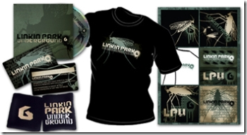

3 décembre 2006
musikCube 1.0 et LPU 6.0
Salut à tous,
musikCube 1.0 vient de sortir !
musikCube qu'est ce que c'est ?
C'est un lecteur audio libre intégrant une bibliothèque. Il lit les fichiers MP3, OGG, FLAC, Monkey's Audio et les CDs audio. Il intègre également un outil d'extraction de pistes de CD.
 la traduction française est disponible ici.
Linkin Park va bientôt sortir leur nouvel album (pour février 2006) mais tout les ans ils sortent un mini-album appellé "Linkin Park Underground" qui est disponible dans leur fanclub.
la traduction française est disponible ici.
Linkin Park va bientôt sortir leur nouvel album (pour février 2006) mais tout les ans ils sortent un mini-album appellé "Linkin Park Underground" qui est disponible dans leur fanclub.
la traduction française est disponible ici.
Linkin Park va bientôt sortir leur nouvel album (pour février 2006) mais tout les ans ils sortent un mini-album appellé "Linkin Park Underground" qui est disponible dans leur fanclub.

Leur nouveau pack Linkin Park Underground 6.0 sera disponible mardi mais les musiques de leur mini-album sont déja disponible sur le net. Voici la tracklist : 01 - Announcement Service Public 02 - QWERTY [Demo] 03 - QWERTY [Live] 04 - Pushing Me Away [Live] 05 - Breaking The Habit [Live] 06 - Reading My Eyes [Live] Voila... bonne soirée ;)
Commentaires 0
Aucun commentaire.